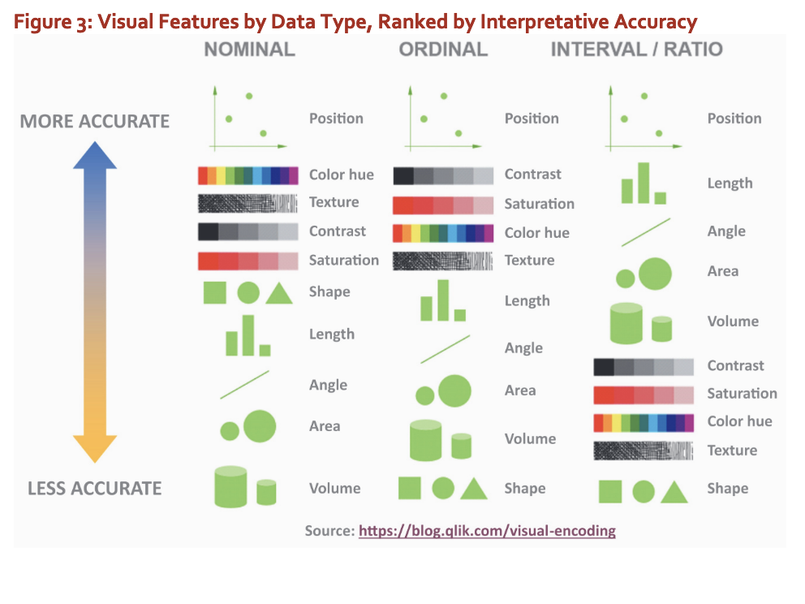

1 Introduction
1.1 A multidisplinary approach
The SIOP Education and Training (E&T) guidelines stipulate students of I-O psychology should be proficient in written and oral communication skills. Visual communication is becoming increasingly important in the workplace, and many important decisions rest on one simple visual tool for communicing quantiative information. Data visualization skills can make you a more competitive job applicant.
ODV requires a multidisplinary approach. First, borrowing from computer science, this course uses the R programming language as it’s focused on statistics and visualization. You should already have familiarity with this software and this course aims to enhance it to allow your work to be reproducible. Second, ODV borrows from graphic design. Design thinking allows us to empathize with our audience to ensure they understand the data presented to then which can aid their decision-making. This course will require you to capitilize on your knowledge of I-O psychology and psychological statistics and enhance them with programming and design skills.
1.2 Data, Information, Knowledge, and Wisdom
- The cognitive psychology of visual information processing
- Visual communication best practices
- Review of data types (e.g., nominal, ordinal, interval, ratio data)
- Data, information, knowledge, and wisdom pyramid
- The facts DON’T speak for themselves
- Keep it simple, stupid
- AGILE: Think like a software developer
- BHAG: Big Hairy Audacious Goals
- KPIs: Key Performance Indicator
- OKRs: Objective Key Results
- The goal of this course is to give you a data visualization portfolio to make you competitive
- Tell ’em what you’re going to tell them. Tell them. Then tell ’em what you just told them.
- TED: The beauty of data visualization - David McCandless (18 minutes)
- “Let the dataset change your mindset”
- Canva: How design thinking is used to solve problemsArchive
1.3 Visual Hierarchy
- Visual hierarchy refers to the arrangement of design elements in a way that guides the viewer's eye to the most important information first. It leverages factors like size, color, contrast, alignment, and spacing to create a structured flow through content.
- Key principles include:
- **Size**: Larger elements draw more attention.
- **Contrast**: Differences in color or tone highlight important areas.
- **Alignment**: Consistent positioning helps organize information.
- **Proximity**: Elements placed closely together are perceived as related.
- **Whitespace**: Areas left empty create focus by reducing visual clutter.
- This design approach helps prioritize content, making it easier for users to quickly find key information.
- Resources:
- [Canva: Visual Hierarchy](https://www.canva.com/learn/visual-hierarchy/)[Archive](https://archive.is/R2b1n)- Visual Encoding (Sinar, 2018) 
1.4 Chartjunk
- Chartjunk refers to unnecessary or distracting visual elements in charts and graphs that do not contribute to the understanding of the data. These elements, such as excessive grid lines, unnecessary text, or 3D effects, clutter visual representations and obscure the data’s message. While some argue that chartjunk can make charts more memorable, others believe it detracts from clarity and precision.
- Darkhorse analytics: data looks better naked, data minimalism: https://x.com/dhanalytics/status/1519650227329798144
- Although design is an important part of data visualization! It can go too far the other way as well.
- R is often critiqued for the necessity of supplementation (e.g., annotation) but this is not a technical limitation; rather, R users tend to underinvest in design at higher rates compared to Illustrator or D3.js users: https://medium.com/nightingale/you-can-design-a-good-chart-with-r-5d00ed7dd18e
1.5 Audience
- A really simply difference is that in technical audiences I use words like error to mean uncertainty, for non-technical audiences I do not.
- Understanding the audience is key to data visualization.
- The data don’t speak for themselves and advocates for the data often don’t represent it well.
- The choir does need to be preached to.
- Many decision-makers try to outsource their decision-making to data.
- Decision-makers & advocates have more in common with each other than either of them have in common with the data.
- Subjective data is just as if not more important than the objective data, but objective data can conceal subjectivity as well; for example, even something as objective as sales must account for how difficult sales are in one region over another.
- Facts tell and stories sell, people prefer anecdotes.
- Even though knowledge is half the battle, the other half is yet won.
1.6 Tools
- Orientation to R, Rstudio, Posistron IDE, Quarto, and ggplot2
- Using Git and version control and GitHub
- R is just a very sophisticated calculator and it will do precisely what you tell it to do
- Data storytelling: https://m.youtube.com/watch?v=IfKlOC5HSHI
- How to create a Quarto document and export to PDF
- Quarto execution opts: https://quarto.org/docs/computations/execution-options.html
- Reprex package R https://reprex.tidyverse.org/articles/learn-reprex.html
- Why individual level data are important: https://x.com/sc_cath/status/1799797169764844000
- R :: packages
- I will always use the curly bracket for {packages}
- R :: ggplot2
- The R programming language uses {ggplot2} to make great data visualizations.
- https://ggplot2.tidyverse.org/articles/ggplot2.html
- https://ggplot2.tidyverse.org/reference/index.html
- Grammar of graphics
- Uses layers to build

1.7 Tables
- Tables are not data visualization
- https://jthomasmock.github.io/gtExtras/articles/plotting-with-gtExtras.html
- Interactive tables in Quarto: https://holtzy.github.io/quarto-tricks/interactive-table/
- Reactable (Quarto integration limited): https://glin.github.io/reactable/articles/examples.html
- DT is a great package, does work with Quarto
- {gt} and {gtExtra} is for pretty tables (example in ajthurston.com/knolling)
1.8 Color
1.8.1 Color Perception
- Color perception: black face vs white face illusion: https://m.youtube.com/watch?v=zXU0O0OqkmQ
- Color is an important part of data visualization because it helps to highlight the most important differences or trends, making it easy to see. It’s one of the fundamental ways to highlight data.
- Color is also an important part of organizational or individual branding. Thinking about the ubiquity of Coca-Cola red or Pepsi blue.
- Color perception from evolutionary psychology foundation and then cultural enforcement which drives differences
1.8.2 Color Theory
- Color Wheel: The primary colors are red, green, and blue because that’s what our eyes can see. Red, blue, yellow is additive color theory from paint pigment days and not really representative of how color works.
- Color Harmony
- Color harmony involves choosing colors that work well together and are pleasing to the eye. Common color harmony schemes include:
- Complementary Colors: Colors opposite each other on the color wheel (e.g., red and green) that create high contrast and vibrant looks.
- Analogous Colors: Colors next to each other on the color wheel (e.g., blue, blue-green, and green) that create serene and comfortable designs.
- Triadic Colors: Three colors evenly spaced on the color wheel (e.g., red, yellow, and blue) that offer balanced and vibrant combinations.
- Split-Complementary Colors: A base color and the two colors adjacent to its complementary color, offering high contrast but less tension than complementary colors.
- Color Context: The perception of a color can change depending on its context. For instance, a color may appear different against various background colors. Understanding how colors interact and influence each other helps in creating effective visualizations.
1.8.3 Color Psychology
(I need to look into the research on this more before I teach it) Colors can evoke emotions and associations: - Red: Energy, urgency, passion. - Blue: Trust, calm, professionalism. - Green: Growth, health, tranquility. - Yellow: Happiness, attention, caution. - Purple: Luxury, creativity, wisdom. - Orange: Enthusiasm, warmth, caution. - Color Associations - Red - Negative Values: Red is often used to indicate negative values, losses, or decreases. - Errors and Alerts: Red can signify errors, warnings, or urgent issues that need immediate attention. (there’s research on this, the red pen effect) - Critical States: In status indicators, red often represents critical conditions or failures. - Green - Positive Values: Green is commonly associated with positive values, gains, or increases. - Success and Approval: Green can indicate success, completion, or approval. - Safe and Normal States: In status indicators, green represents safe, normal, or optimal conditions. - Yellow - Caution: Yellow often signifies caution, warnings, or conditions that require attention but are not yet critical. - Intermediate Values: Yellow can be used for intermediate values between positive (green) and negative (red) extremes. - Blue - Neutral: Blue is often used as a neutral color to represent general information, averages, or non-critical data. - Information and Support: Blue can indicate informational messages or support functions. - Orange - Warning: Orange is used to indicate warnings or issues that are of moderate concern. - Pending Actions: It can also represent pending actions or items that are in progress. - Color Usage: Using color effectively in data visualization helps in communicating information clearly: - Highlighting Important Data: Use bold or contrasting colors to emphasize key data points. - Grouping Data: Use similar colors to group related data, making patterns and relationships easier to identify. - Sequential Data: Use gradient scales (light to dark) to represent sequential data, indicating progression or intensity. - Diverging Data: Use two contrasting colors to show deviation from a central point, often used in heat maps or to show differences.